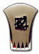
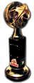
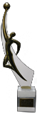
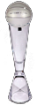

Domaći Kup:
1978/79, 1989/90, 1991/92, 1993/94, 1994/95, 1998/99, 1999/00, 2001/02, 2007/08, 2008/09, 2009/10, 2010/11, 2011/12, 2017/18, 2018/19, 2019/20

Državno Prvenstvo:
1975/76, 1978/79, 1980/81, 1986/87, 1991/92, 1994/95, 1995/96, 1996/97, 2001/02, 2002/03, 2003/04, 2004/05, 2005/06, 2006/07, 2007/08, 2008/09, 2009/10, 2010/11, 2011/12, 2012/13, 2013/14

Euroliga:
1991/92

ABA Liga:
2007/08, 2008/09, 2009/10, 2010/11, 2012/13

Evropski Kup Radivoja Koraća:
1977/78, 1978/97, 1988/89